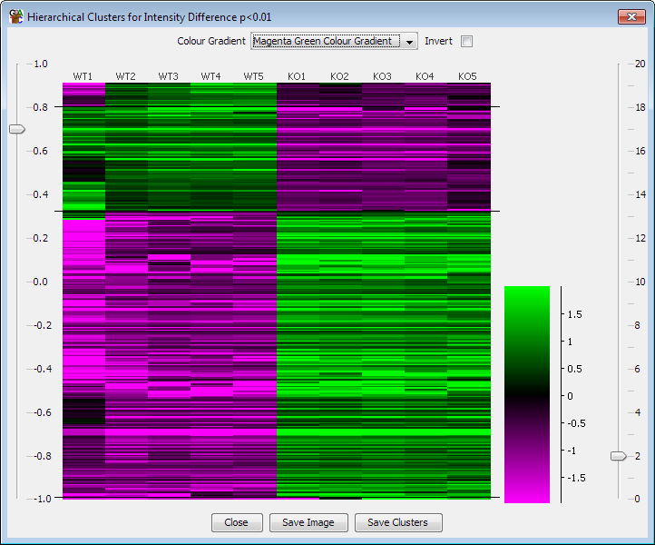

The hierarchical profile plot is a graphical method of clustering together sets of probes whose values show related changes over at least 3 different data stores.
There are two modes in which the tool operates - you can choose to do a per-probe normalisation which will use a correlation based clustering to find probes with similar shaped quantitation profiles, or you can take the current quantitation to do a euclidean clustering on the basis of the smallest absolute difference between probe quantitation values.
The plot works best with small sets of probes (fewer than 5000 if you want it to complete in a sensible amount of time), which you already know show significant changes between the conditions you are plotting. Taking the results of the intensity difference filter, or a plain difference filter woudl be a good basis for this plot.
The plot constructs a hierarchical grouping of your probes based on the degree of correlation across the datastores which are currently visible. The results are then plotted on a heatmap where the colours represent the signal level for that probe in that datastore. The values for this plot are normalised across the set of datastores (ie the median value for each probe is subtracted from the actual values for that probe in each of the data stores) so that the values are more easily compared on the plot.
There are no options to set when actually constructing the plot. There are some display options within the plot though